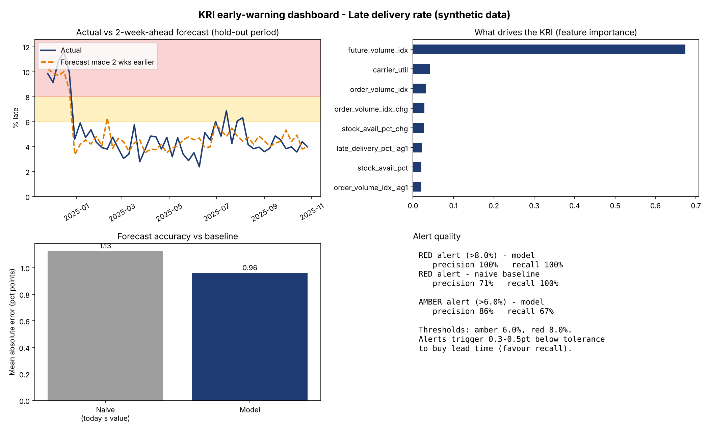

suhas102 / projects / kri-early-warning
KRI early-warning model
A key risk indicator is only useful if it warns early. Leadership sees "late delivery rate" after it has already breached tolerance. Can we flag a likely breach two weeks ahead?

KRI and tolerances
Weekly late-delivery rate. Amber above 6%, red above 8% (assumed appetite).
Approach
-
Generated 200 weeks of synthetic operations data (order volume, carrier utilisation, stock availability, absence, weather, system incidents) with realistic peak-season effects and a non-linear capacity effect.
-
Built lag, change and rolling features using only information available at the time of the forecast, plus the planned trading volume (known in advance).
-
Gradient boosting forecast of the KRI two weeks ahead, tested on the last 25% of weeks (time-ordered split, no leakage) against a naive "same as today" baseline.
-
Alerts trigger 0.3-0.5 points below tolerance to buy lead time, so recall matters more than precision.
Results (hold-out: 49 weeks, 5 red weeks, 9 amber-or-worse weeks)
-
Forecast error 0.96 points vs 1.13 for the naive baseline (15% better).
-
Red alerts: model precision 100% / recall 100%; naive baseline precision 71% / recall 100%, so the model removes false alarms.
-
Amber alerts: precision 86%, recall 67%.
-
Planned volume is the dominant driver (about two thirds of importance), then carrier utilisation.
What I would tell leadership
Most late-delivery breaches are predictable from the trading plan and carrier capacity two weeks out. Review carrier capacity commitments when planned volume rises, rather than reacting to the breach.
Limitations
Synthetic data and only 5 red weeks in the test set, so the 100% figures are indicative, not proof. The model leans on planned volume, so a real version needs validation on real history, drift monitoring (see the AI model risk monitoring project) and owner-agreed thresholds.